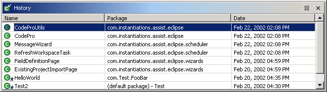

Java History The CodePro Java History view tracks all types that have been accessed within the workspace. The types may be deleted or sorted by name, package, time of access. Selecting a type in the list will open an editor and focus it on the code for the type. Options are provided via a preference page to show only the most recent n number of types and/or only those types accessed in the specified time period (e.g., the last week, the last n days, etc.). Early StartupIn order that CodePro track accessed types, this plugin must be loaded and executed when Eclipse is launched. |